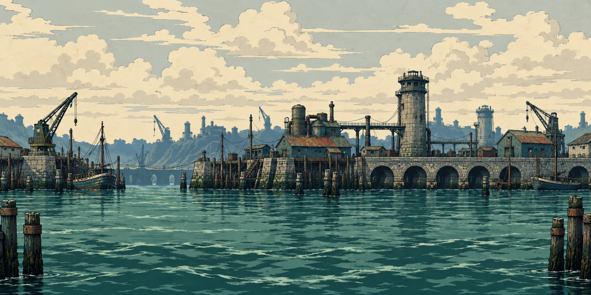
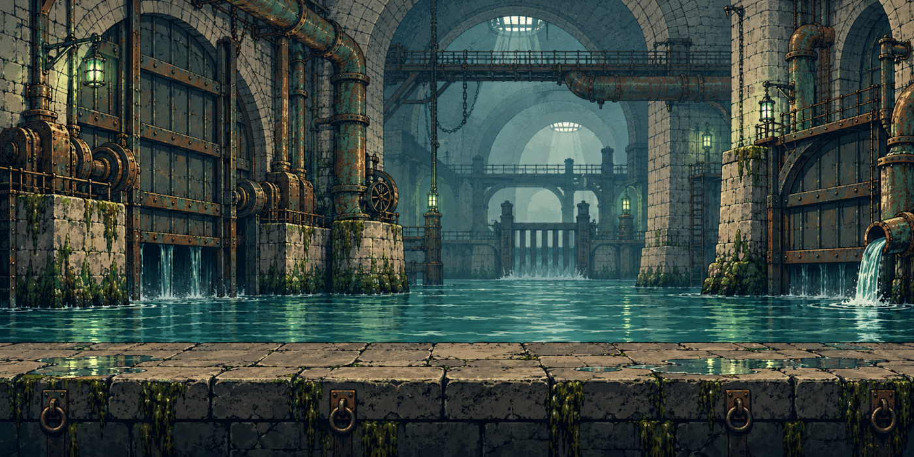
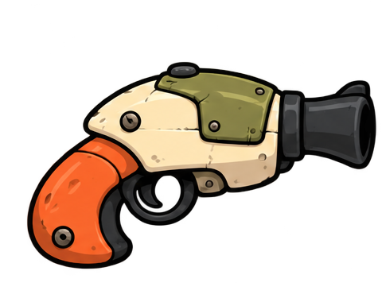
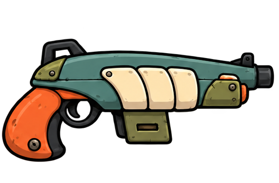
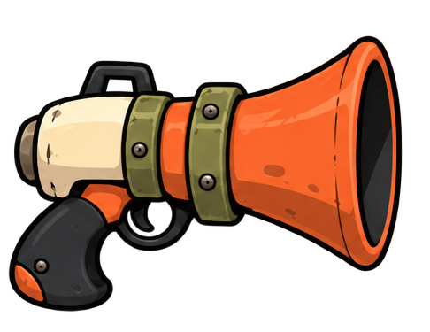
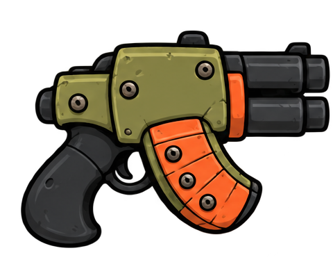
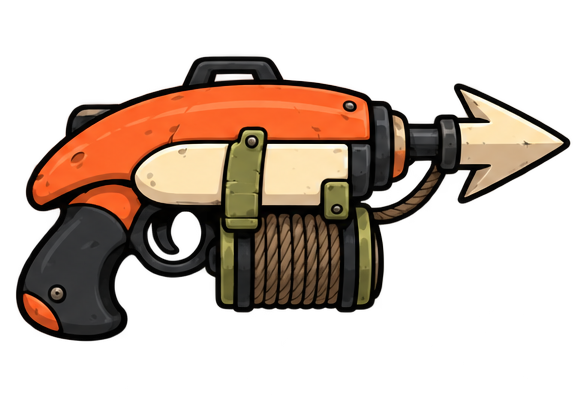
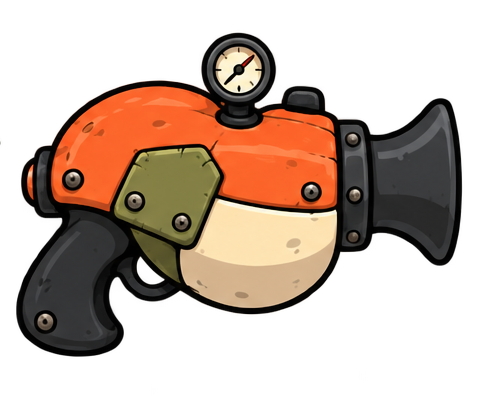

← Back to the gameLess noise. Same bite.
Combat Clarity combines rapid hits into readable totals. Balanced mode limits visible projectiles and flashes. Calm removes muzzle flashes, reduces motion and shows fewer projectiles. Every attack still deals full damage. Find it in Settings.
Three roads from home

DISTRICT 01Dry Docks
Cold water. Loose boards. A closed gate. Brine takes the first step before anyone can tell him not to.
Play the chapter entrance

DISTRICT 02Drainage Run
Under the harbor, pipes hum overhead. Every shortcut has someone collecting a toll.
Play the chapter entrance
Salt Flats
Furnace light cuts through the salt. Machines that should be sleeping begin to turn.
Play the chapter entrance
The captains
Foreman Rusk
Watch the heavy swing. Upgrade Shell before this first blockade. Step Shell unlocks after stretch 5; Patch Up unlocks at 8.
Valve-Mother Venn
Use Volley during REPAIR INCOMING to interrupt. Her supplies can restore at most 24% of starting health per battle.
Marshal Flint
Guard reduces ordinary gun damage. Melee bypasses it; Keelspike ignores guard and unlocks at stretch 140.
An argument for each job
New weapons unlock from road clears. Repeat farming earns salvage; pushing forward advances the next unlock.

Plugger
Your starting weapon

Tideline
Clear stretch 15

Low Tide
Clear stretch 40

Rivet Rattle
Clear stretch 80

Keelspike
Clear stretch 140

Boilerjaw
Clear stretch 220
Build a rhythm
Push while fights are comfortable. Refit and gather salvage when a captain stops you. Damage and Speed shorten fights. Shell, Bulkhead and Patch Up help you survive. Mastery branches and attachments give your favorite gun a longer life.
Away income grows with cleared stretches and Scavenging, for up to eight hours. Harbor boats add separate income. New voyage tiers award large first-clear cargo; repeats provide smaller rewards.